9thシングル個別握手会！
遊びに来てくださったみなさん
ありがとうございました( ^O^ )
お留守番ちーむのみなさん
報告お待たせしました♪
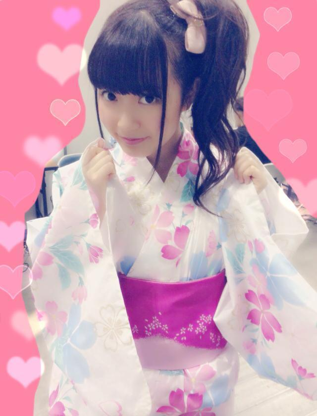
ぴひゃーー(´^o^｀)
3部、4部で今年も浴衣着ちゃったよ☆
去年も白の浴衣着たんだけど、
去年のとはまた違うやつだよー
なんとゆったん(斉藤優里ちゃん)が
着付けしてくれました！
着付けできるなんて
なんたる女子力(゜゜)
ゆったんありがとうね＊
きゅんきゅん王国のみなさんからも
ゆったんにありがとう伝えといてねっ
そんなゆったんは私を
えくぼひめって呼んでくれるの。
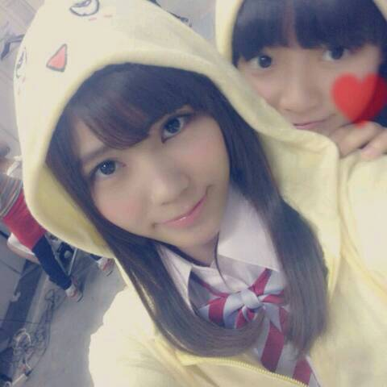
こちらは1部
陽菜ちゃんとおそろいの
ふなっしーパーカーだなっしーーぷしゃあぁ
一緒に渋谷でお買い物してて
おそろいで買ったのー
何だかんだで仲良しなの私たち( ´ ▽ ` )ノ
これ読んだ陽菜ちゃんに
「は？」って言われたらやだなあ
じゃあここだけの話ね♪
そして2部では
水色？のさわやかーな
ワンピースを着ました！
容量の関係でまた後日貼る(´ ω ｀)
ヘアは
巻きおろし......1部
お花くるくる......2部、3部
ポニーテール......4部
でした！報告はそんな感じです◎
ここから感想。
9thの個握とゆことで
なんと関東4部制ヽ(〃∀〃)ノ
ちょっと前まで2部制だったひめたん歓喜！
きゅんきゅん王国のみなさんの熱い気持ちが
形になったのかなって思うと姫は感涙です。
こんなに握手会で長くお話したり
お洋服着替えたりできる日がくるなんて
みなさん本当にありがとう！
不器用な姫なりに
少しずつ恩返ししていけたらな＊゜
はじめましての方も
最近は多くて、ものすごく嬉しくて。
もっとひめたんのこと知って欲しいし
もっと仲良くなりたいな
ゆっくり仲良くなろうねよろしくね(ノ)・ω・(ヾ)
そしていつも来てくださる方は
ちょっと前までと時間帯がガラッと変わって
大変な思いさせてしまってたらごめんね
(ノ)・ω・(ヾ)
次回は8thシングルの握手会なので3部制です
間違えないでね！
そして1部に参加するよーって方は
ちょっと辛いかもしれないけど
早起き頑張ってみてね☆
さあ前回の乃木ののは
きいちゃん(北野日奈子ちゃん)
愛未(能條愛未ちゃん)でした！
やーほんとに
私ってゲラなんかなあ(´・ω・｀)ごめんなさい
きいちゃんと愛未が
ラジオで腕相撲してました
伝わらないやーつー
ふたりとものびのびとしてて
個人的には楽しい回でした←誰
次回は
秋元真夏ちゃん
若月佑美ちゃんです☆
次回もお楽しみにっ！
乃木どこ、開運も見てくれたかな( ^^ )？
頭NO王になっちゃったまあや
かわいいほんとにかわいい。
この収録中ずっと笑ってばっかだったなあ
オンエア観返しても面白くて
夜中にひとりでケタケタ笑ってました←
開運は2週に渡っての乃木回
ありがとうございました。
楽しかったです！
あのアットホームな感じが
あたたかくてほっこりしました(＾ω＾)
またみさみさが忙しい時は
陽菜ちゃんとふたりで呼んでくださーい♪
そんバカコンビ好きって言ってくださる方
多くて嬉しい。ばれーったー♪
最後にっ
ヤンヤンさん、TopYellさんに
取材していただきました！
また告知しまーす♪

 (中略)
(中略)
変わりに、土下座3％で謝るので
許して下さいワン。(＃^.^＃)これ読んだ瞬間に頭の中で
♪君は1000%
が流れた(＃^.^＃)ってゆーどうでもいい報告でした
かなりんブログで
肩からひめたんがシリーズ化されてるけど、
どうして肩から出るようになったの？人の背中に隠れることが多いみたいで
肩から顔だけ出すってのやってたら
こんな状況です。
かなりーんシリーズ化ありがとう(´゜ω゜｀)おめ
眠くなった時に
起きてられる方法を教えてください。
ただしちょっと変わったトリッキーなやつで
お願いします[壁]_＾) ワクワク♪火のついた薪をしょったら
いいんじゃないかな(＊^ω^＊)
カチカチ山みたいに♪
のぎ天って関東だけ？？教えてちょ笑そんなことないし
むしろ世界中どこにいても観れる！
楽天SHOWTIMEってアプリを
ダウンロードしてみてね♪
ひめたんの日記の
コメント欄下２ケタに46を踏んだ方へ
手書きでコメ返するコーナー
＼ ひめたん46 ／
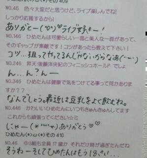
いつもたくさんのコメント
ありがとうございます
「ボーリング」じゃなくて「ボウリング」な！
あーもうこれ悔しい相当悔しい
ボーリングって確か
土質かなんかを検査するために穴掘るやつだよね
あーー悔しい(´ ω ｀)
ボウリングやってきました！
(＊´・ω・＊)
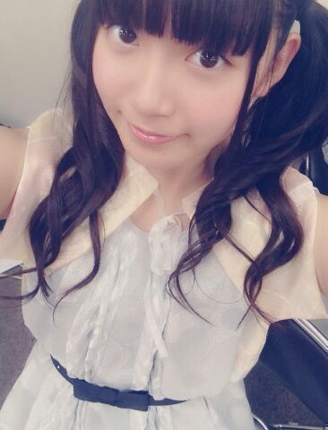
金曜日、土曜日と
アンダーライブin六本木ブルーシアター
がありました(＾ω＾)
9thアンダーライブ
これで7公演が終わりました！
六本木としてはこれが千秋楽。
ブルーシアターのみなさん
ステキなステージをありがとうございました☆
アンダーライブに
来てくださったみなさん
本当にありがとうございました！
今回のアンダーライブは
いかがだったでしょうか？
行ったよーて方は
ぜひ感想を聞かせてほしいなー
日記のコメントとか、握手会とかで教えてねー♪
ひめきゅんさんへの報告としては
今回のユニットコーナーでは
海流の島よ、ダンケシェーンをしました！
海流の島よ は
飛鳥、川後、樋口、畠中、和田、中元
オリジナルメンバーみんなで
バースデーライブ以来の披露でした♪
オリメンのあの安定感は何だろう安心する。笑
ダンケシェーン は
飛鳥、永島、川後、樋口、新内、中元
いつもメンバーやってるのみてて
めっちゃ楽しそう！ひめたんもやりたい！って
思ってたから今回披露できて楽しかったです♪
あれ、今回どっちも6人ユニットだ(゜゜)
いま書いてて気づいた(゜゜)
あ！そうそう唐突だけど
お知らせとゆーかお願いとゆーか
公式サイトでもう
チェックしていただけてますか？
次のアンダーライブで見てみたいユニットを
みなさんから募集してまーーす( ´ ▽ ` )
歌ってほしい楽曲と歌唱メンバーを
募集しているので
ぜひぜひ投票してみてねー♪
それから
プリンシパルコント傑作選より
「入ってこないで」を
樋口、新内、中元でやりました！
プリンシパル行ってないよーって方は
こんなこと言っても
なんのこっちゃーて感じかもだけど
ひめたんはあの入ってくる奴をやりました←
基本的にコントにはトラウマがあるから
傷をえぐるようで
あんまやりたくなかったけどさ(笑)
でもちゃーんと演出をつけていただいて
みなさんが笑ってくれたから
楽しかったです(・∀・)
もうやりたいとは思わないけども←
だからあれだね、レアだね(・∀・)
報告はそんな感じかな？
なんか、
このライブを通して
またいっこ成長したいなーって思うの。
トークによる表現の仕方？
パフォーマンス？
いろいろと。ふわっとしてるけど。
とりあえず個人的に
前回よりも手応えがありました！
なによりやってて楽しかった( ^ω^ )
ひめたんコールやひめたんタオルや
ぴんくのサイリウムや
全部嬉しかったですっ
残りの3公演もがんばります！
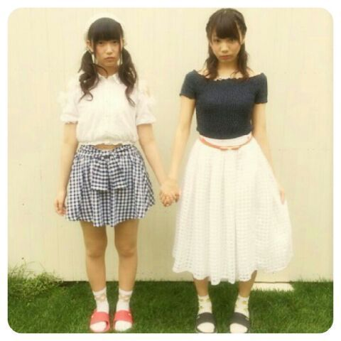
そして！
ついに始まりました新番組「のぎ天」
#1はもう観ていただけましたか？
女子力チェーーーック回という
何ともひめたんが苦手そうな企画でした(笑)
いや、りぼんは女子だよね！
ひめたんはいま98個になったよ( 'ч' )
あんな感じで
メンバーの新しい顔が
たくさん観られる番組になっていると思います！
楽天SHOWTIMEから
毎週金曜日更新☆
次回はボーリング対決です♪♪
お楽しみにー(＾ω＾)
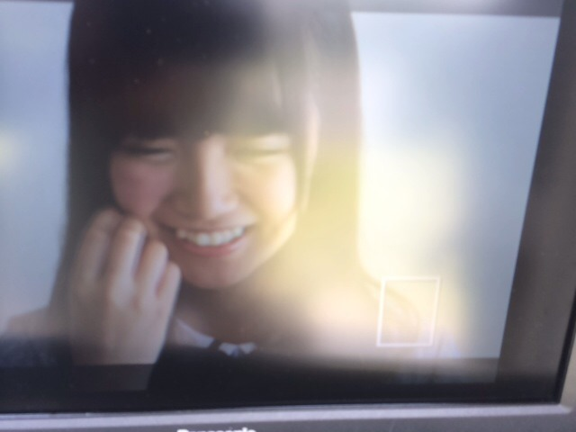
そして個人PV「SHIRITORI HOUSE」
9thシングルのType-Cに
収録されています
もう観ていただけましたかー？
今回のテーマは「しりとり」！
ごみ袋に入ってみたり、
スリッパで頭を叩いてみたり、
なんとひめたんはじめて歌いました(＊^O^＊)
ずっと歌いたかったんだー
テーマソングーふー♪♪
あっあれちなみに
なんでひめたんが変身したかわかるよね？
最後「ん」がついた罰ゲームだよ！
前回の日記のコメント読んでたら
ひめたんにスリッパで叩かれたい！て人が多くて
いや、何て返事したらいいか
よくわからんけどさ( ´_ゝ｀ )
あのシーン何回もやったなー
力が弱かったり
コントロールみすってあんまし当たらなかったり
スリッパぽーいが上手くいかなかったり
実は結構難しいんだよー
ひめたんがんばったんだよー！
そしてこの個人PV
撮ってくださった監督チームのみなさんが
とってもステキだったんです＊＊
写メ撮っとけばよかったなあ
たまたまこの日全員ボーダーのお洋服着てて
わー仲良しだー(((o(*゜▽゜*)o)))って。
撮影も終始ふわふわした感じで
なごやかーな感じで
とっても楽しかったです♪♪
みなさん「ひめたーん！」って呼んでくださるの！
ステキな作品になってると思うので
ぜひチェックしてみてくださいっ
さあ明日は個別握手会！
さらに乃木のの、乃木どこもあります！
乃木ののは
きいちゃん(北野日奈子ちゃん)
愛未(能條愛未ちゃん)です☆
先週よりも笑ってて
進行が成立してるか不安なレベル......(笑)
ぜひ聴いてねー♪♪
(＊´・ω・＊)
9thシングル「夏のFree&Easy」
発売されました！
さらに、
オリコンデイリー1位
いただきました。゜(゜^o^゜)゜。
いつも応援してくださるみなさんの
おかげです！本当にありがとう！
個人PVのことは
次回いっぱい書こうと思いますー
なんか感想あったら教えてー♪
そして
SamuraiELOさんに
取材していただきました(＊^ω^＊)
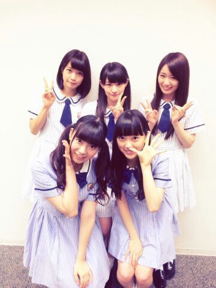
このめんつ。
7/24発売ですっ
よろしくお願いします♪♪
そして新番組「のぎ天」始まります！
楽天SHOWTIME内のWeb番組で
毎週金曜日更新です☆
第1回は7/11~
よろしくお願いします(＾ω＾)
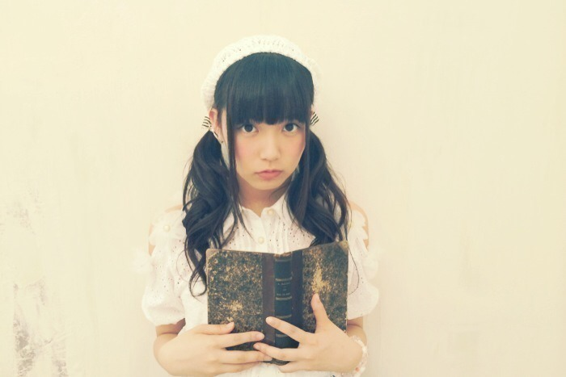
明日、明後日はアンダーライブ本番！
ちょうど東京に
台風が近づいているみたいなので
どうかお気をつけて( >_< )
メンバーとファンのみなさんと
会場全体で楽しいライブにしたいなー
大丈夫、ひめたんは晴れ女だからどうにかなるよ◎

 ひめたんって
ひめたんって
デコピンしたくなる顔だよね〜って
言われへん？(笑) ねーこれ言われるのー
でこぴんじゃないけど、ちーちゃんに
めーちゃんを見てると殴りたくなる♪とか
めーちゃんを見てると握りつぶしたくなる♪とか
言われる(゜゜)
え、なんなの何ドＳなの(゜゜)
私ひめたんより年下なのー
だからきゅんきゅん王国のお姉様ならぬ
妹様になります！
ひめたーん、私妹様になってもいーい？いもたま(＾ω＾)
ひめきゅんの妹たまだね！
ちなみにこの前の乃木のので
らりんがひめきゅんのお姉たまになったよ///
ひめたん、セミのうるさい鳴き声対策を教えて！木を切り落......冗談です。
ひめたん
くりーむそーだといちごみるくどっちがすき？いちごみるくかなー
とゆーか炭酸があんま好きじゃなくて
すなわちクリームソーダのソーダも
ちょっと苦手なんよー( ^O^ )
楽屋にいるとき、
ななみんが赤ちゃん言葉で
ひめたんに甘えてきたらどうする？ひ「ほれほれななみんよちよちよちー」
ひ「(ななみん......(察し))」
ひめたんはメンバーの家とか行って
チャイム鳴らしたらどれくらい待てる？
一秒くらい？意外とせっかちなので
あんまし待たされるといらいらするタイプ(笑)
いや一秒はさすがに待てるけどね。
 パリからみんな帰ってきたけど
パリからみんな帰ってきたけど
何か変わってたとこありましたか？「これどこで買ったの？」
「パリ！」
が増えた気がする(＾ω＾)
今季のアニメでアオハライド以外にも
気になるやつってありますか？録画が溜まってばっかで
まだみてないやつもあるけど
幕末Rock
グラスリップ
アカメが斬る！
月刊少女野崎くん
黒執事3期
ばらかもん
とか。他に面白いのあったら教えてー☆
ひめたんに質問ですが、
俺が彦星だとしたらひめたんは何ですか？おり......ひめたん(・∀・)
ごめんね、今日も
ひめたん46おやすみさせてください
落ち着いたらまた書くからね( ；；)
いつもコメントたくさん
本当にありがとうございます
あー眠いーー
みなさんちゃんと乃木のの聴いてくれてるみたいで
あー眠いーー
感想書いてくださった方たくさんいらっしゃったよ
あー眠いーー
本当にありがとうございます！これからも
あー眠いーースサスイキョ
はっ！！、
(＊´・ω・＊)
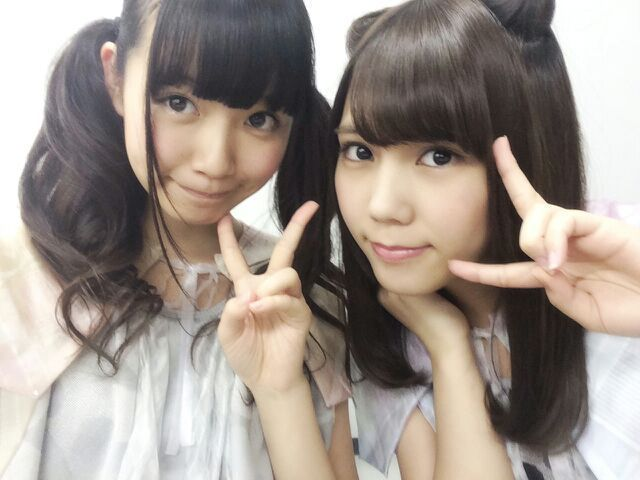
いよいよあさって7月9日
9thシングル「夏のFree&Easy」
発売になります♪
乃木坂大好き愛してるーって方は
ぜひ全タイプ制覇していただきたいなって
思ったりしつつ、
ひめたん大好きひめたんしか見えないよー
ってあ・な・た・に・は(〃ω〃)
Type-C盤がおすすめです◎
アンダー楽曲も、ひめたん個人PVも
Type-Cに収録されているということは
まあ簡潔に言っちゃうと
ひめたんはType-Cにしかいないので(笑)
ごめん言葉選べない(笑)
Type-Cはマストで♪♪
よろしくお願いしますっ◎
あっお仕事のお話でもしようかな
乃木ののは聴いていただけてますか？
前回は
あしゅりん(齋藤飛鳥ちゃん)
らりん(永島聖羅ちゃん)でした☆
らりんあしゅりん
なんだろうこの語感の良さ。
らりんあしゅりんらりんあしゅりん......
まあなんてゆーか
いろいろとごめんなさい！
新人MC、下手くそなのもご愛嬌(´っ^ω^ｃ`)てへ
......ごめんなさい(´っ^ω^ｃ`)
番組のお便りたくさんお待ちしてますよー
次回もお楽しみに☆
そして、乃木坂46SHOW！
収録してきましたヾ(＠⌒ー⌒＠)ノ
オンエアはちょっと先なのですが
また近くなったらお知らせするから
ぜひチェックしてねー♪
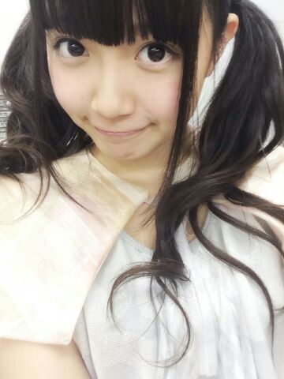
明日もお仕事がんばるぞ(＾ω＾)

詳しいことは
次回の日記で報告できるかなー？
最近お仕事が充実してて幸せ♪♪
アンダーライブのリハも始まったよ！

 ひめたんが好きなパスタ(スパゲッティ)は
ひめたんが好きなパスタ(スパゲッティ)は
なんですか？基本的には和風のあっさりしたのが好みかなー
ミートソースも好きですよー
クリーム系もたまには食べたくなるけど
普段あんまし頼まないかなって感じ。
突然なんだけど 、 ひめちゃんは
コンビニに行ったらつい買っちゃう
物とかありますか？
マスクかなー。
愛未とあすかりんとコンビニで
何買うー何買うー何買うーって
うだうだうだうだする時間はちょっと幸せ◎
ひめたんに質問です！
僕になにか質問ありますか？ないです(笑)
あーごめんごめん( >_< )
じゃあ！はい質問です！みんなも答えて！
今日は七夕です。
今日のみんなの夜ごはんは何でしたか？
深夜にアンダー曲のMV見ない方がいいって
言ってたけど
無視して見たらお腹が空いたんですが
どうしましょう？ メール読んでくれたのかな？
ありがと(＊^ω^＊)
で、なんで無視したの？忠告したでしょ？
おこ！ひめたんおこ！ひめたんごぱーんち！
ひめたんハガキ応募の
「消印有効」の意味わかる？わかるよ！
例えば「7日消印有効」なら、
7日にポストに入れるのはセーフなんだよね
「7日締切」なら6日までにポストに投函。どや
基本チョキしかだせないバルタン星人が
ジャンケンに勝つには
どうしたらいいと思いますか？もうねーじゃんけんしてる時点で
勝つ気ないと思う。
じゃんけんしてるバルタン星人なんか見たくない！
バルタン星人ならびーーむとかしゅわっちッとか
何かできるんじゃないの(゜゜)？
現在ひめたんを応援したくなってるけど、
あまり応援する人増やすと
今まで応援してきたメンバーに
失礼な気がして悩んでます。
ひめたんこの状況どうしましょうか？失礼とかないよ( ^ω^ )！
大丈夫！それで推しメンちゃんに怒られたら
ひめたんのせいにしていいから
あなたもひめきゅんさんになっちゃいなよ！
きゅんきゅん王国はフリーな国♪楽しい国ー♪
ひめたんが可愛すぎるので
リスペクトしてもいいですか？かわいくないですけども
嬉しい (丿^ω^ヽ)ありがとうっ
ひめたんの日記の
コメント欄下２ケタに46を踏んだ方へ
手書きでコメ返するコーナー
＼ ひめたん46 ／
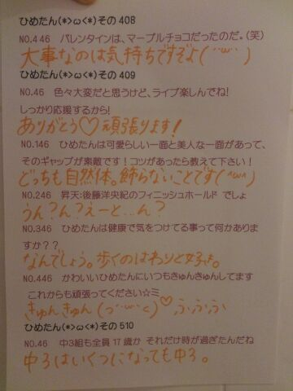
暗いけど気にせんでー(´・ω・｀)
ごめんよー
いつもたくさんのコメント
ありがとうございます
前回あんまし質問返し出来なかったぶん
今日はちょっと多めなのです(＊´ω`＊)
そうやってみなさんのコメントが
ひめたんの日記を
作っていってくれるんだよー☆
(＊´・ω・＊)
ごめんねーお待たせしました(´・ω・｀)
9thアンダー楽曲「ここにいる理由」
MVも乃木どこスタジオライブも
解禁になりました！
みなさんチェックしてくれたかな？
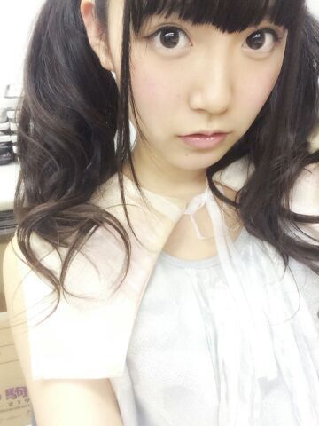
ひめたんはちゃんこ鍋担当！笑
ダンスも実はものすごくかっこいいから
ぜひライブでパフォーマンスを
観ていただきたい！にゃ
えーとーいろいろ振り返ろうかな
まずは乃木のの！
前回は
ろってぃー(川村真洋ちゃん)
かなりん(中田花奈ちゃん)でした☆
この組み合わせ、ピンと来る？
ちょっと前に取材していただいた
ダンス選抜の3人なの！偶然！
まあダンスの話なんて
一瞬しかしなかったけどね(´っ ω ｃ`)てへ
ゆるーい感じになりました♪
まあ楽しかったからよしとするっ
乃木のの公式ブログやfacebookに
収録風景の写メとか載ってるんだけどね
この日のりぼんは ろってぃーからの贈り物！
ろってぃーありがとねヽ(・∀・)ノ
明日の乃木ののは
あすかりん(齋藤飛鳥ちゃん)
らりん(永島聖羅ちゃん)です
次回もお楽しみに☆
続いて乃木どこ！
先週の乃木どこは頭脳王決定戦でした(＊^ω^＊)
ひめたんは4位という順位を
いただきました！
コメントを読んでるとね
「ひめたん意外と賢いんだね」
「ひめたん意外と勉強できるんだね」
「ひめたん今までばかにしてごめんね」......
意外って何！
そして最後の何(∩^o^)⊃━━━━━☆゜.*・。
ひめたんはこう見えても出来る子だよ！
こう見えてもってどう見えてるかわからんけど
実はやるときはやる子なんだよー
早押し問題なんて
何にもしてないけどね(笑)
あれなのよ、
運動会のかけっこのピストルとか
ビクッてなるタイプの人間なの(´・ω・｀)
ASEAN？カルデラ？
なんだよ厳かと40°しか
わからんかったよ(´・ω・｀)
再来週もお楽しみに♪
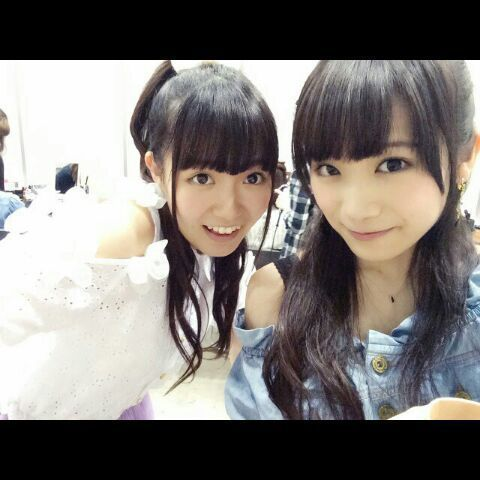
それから、
アンダーライブの感想
たくさんありがとうございました！
出演メンバー全員の熱い想いが
ファンのみなさんと共有できていれば
嬉しいです♪
いつも思うのは
いいライブだったなって日は必ず
ファンのみなさんに助けられてるなって(´・・`)
パフォーマーとしては正直まだまだ
力不足だし経験不足な私たち。
それでも最後はファンのみなさんの声援が
ライブを良い雰囲気を作ってくださってるなって
今回改めて感じました！
モチベーションは高いままキープしつつ
技術はさらに上のレベルを目指して
頑張っていきたいな( ´ ▽ ` )
あと6公演あります！
観に行くよーって方は楽しみにしてて下さい＊＊

 夏が来たので冷やし中華とか食べるんですけど
夏が来たので冷やし中華とか食べるんですけど
ひめたんはどんな鍋が好きですか？いやーひめたんは
どんな鍋が好きなんだろうね┐(゜ ゜)┌
あぁぁあぁああうああ無性に鍋が食べたいッッ！！
とはならないからね最近は。
ひめたんは握手会とライブの
どちらが楽しいですか？どちらがってゆーか
全然違うものだし比べられないねー
それぞれに違った楽しさがあって好きですよ♪
歌ってるひめたんがみたかったらライブ、
お話してみたかったら握手会に
遊びにきてほしいな( ´ ▽ ` )ノ
ひめたん46は
今回はおやすみさせてください
ごめんね。
いつもたくさんのコメント
ありがとうございます
前回の記事の全部読みました！
乃木ののの感想とかありがとうね♪
雑誌チェックしてくれてるのも嬉しいよ( ´ ▽ ` )
開運も観てくれてありがとー♪♪から
(＊´・ω・＊)